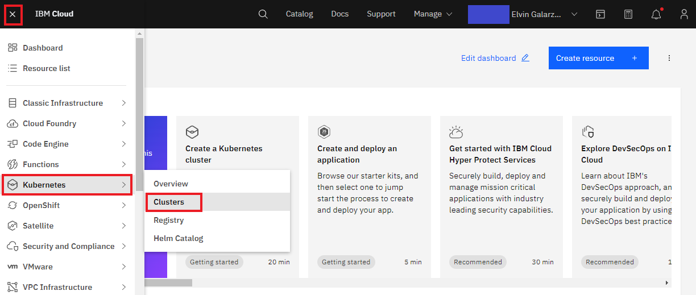
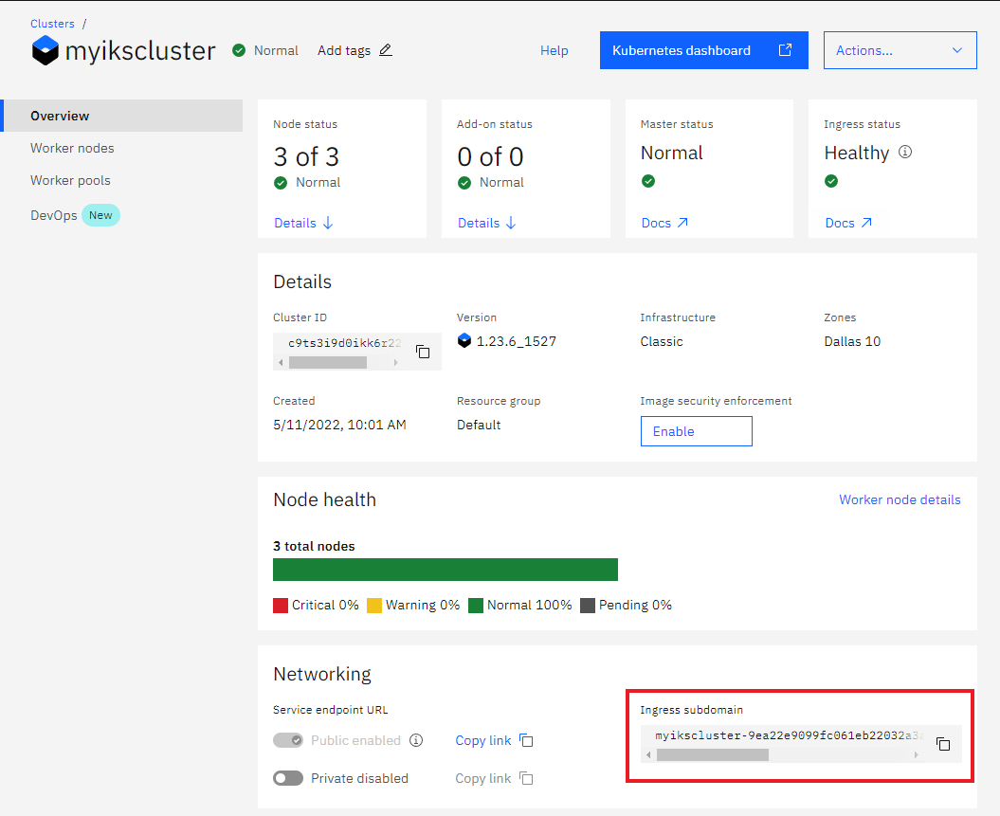
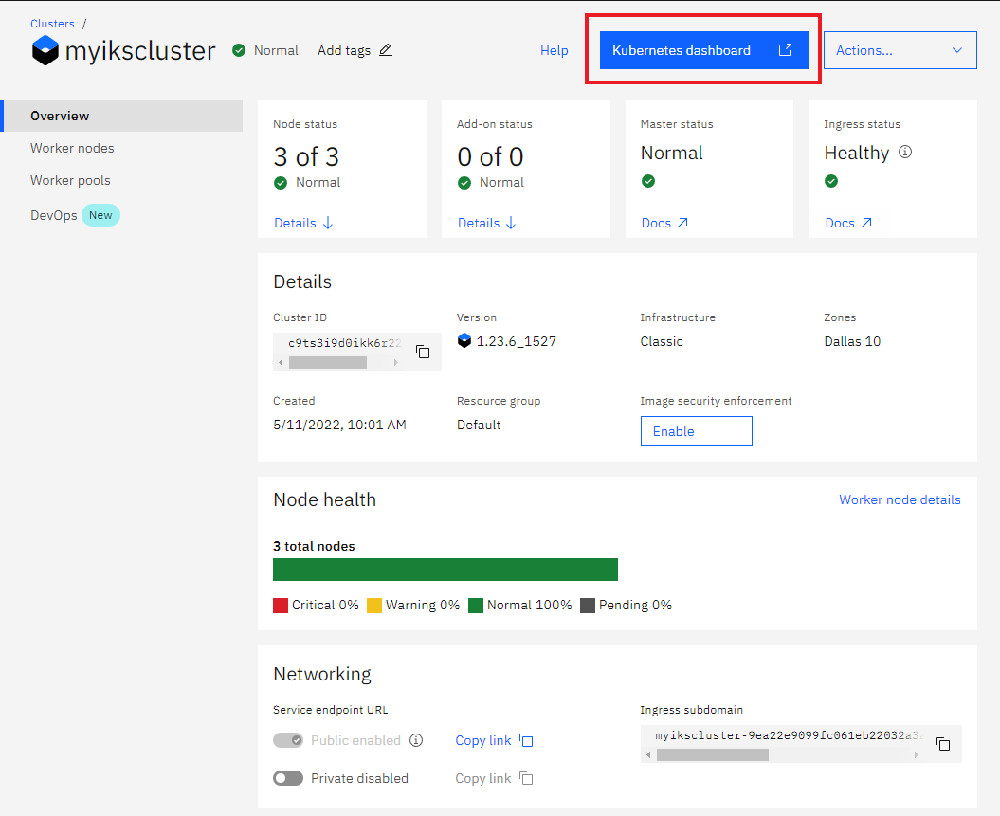
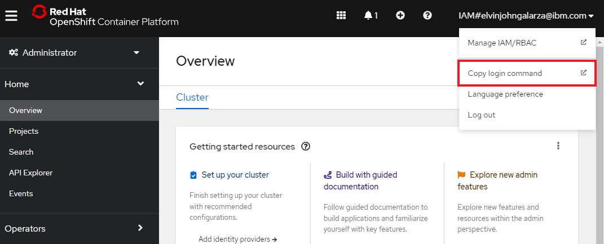
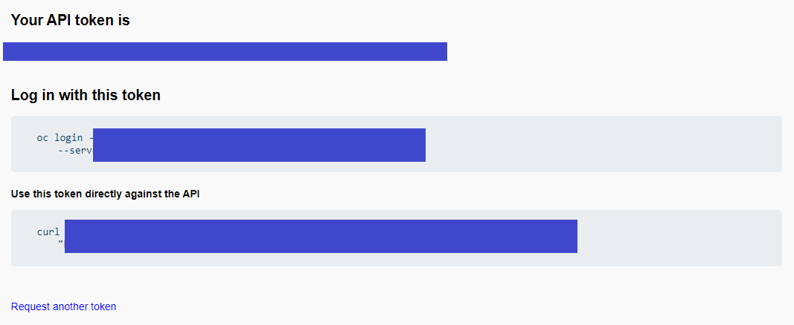
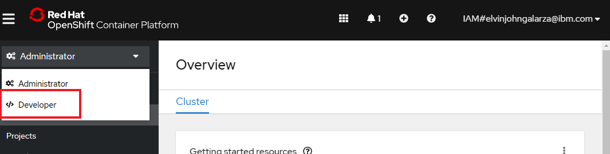
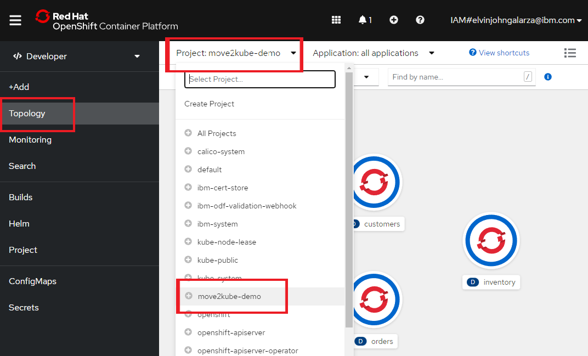
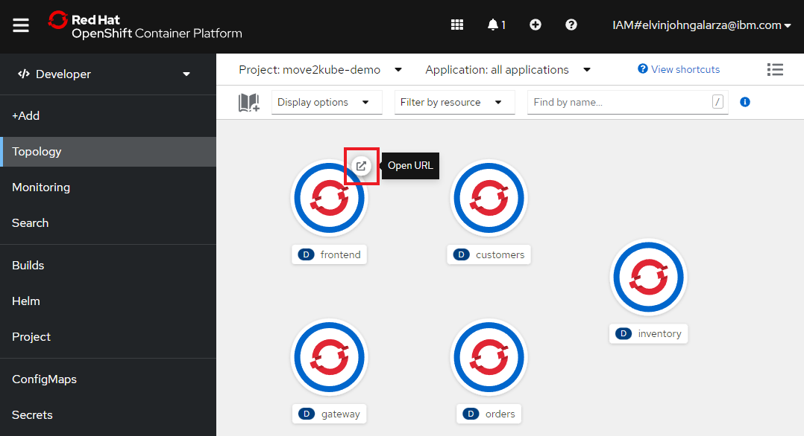
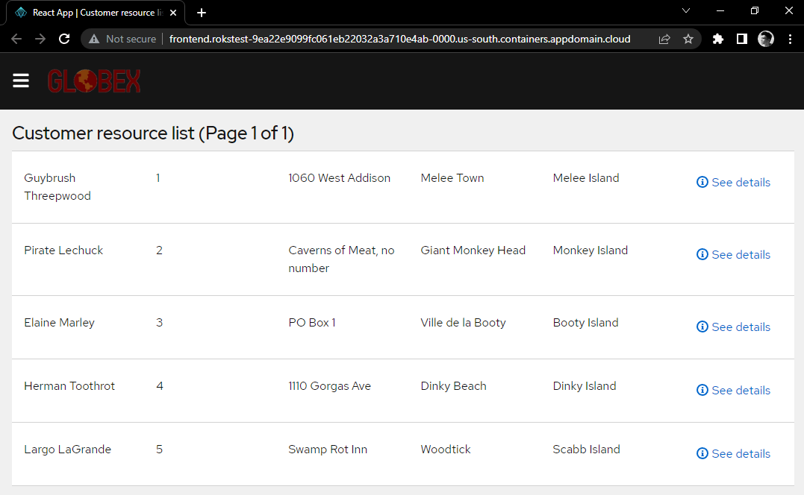

Steps for migrating to IBM Kubernetes Service¶
Perform a transformation on your IBM Cloud Foundry application via move2kube transform
In the transform phase, we detect our plan and will perform a transformation using the plan. You'll be asked a series of questions related to the application itself, your image registry, and your cluster. During this phase, we will build images for each of the services in our application and push those images into the image registry. Later, we will use the image registry to pull the images and deploy them into the cluster.
Invoke the Move2Kube's transform on the plan
move2kube transformKeep the default transformer type (press Enter).
Output:
INFO[0000] Detected a plan file at path /Users/elvinjohngalarza@ibm.com/move2kube-iks-demo/move2kube-demos-clean1/m2k.plan. Will transform using this plan.
INFO[0000] Starting transformation
? Select all transformer types that you are interested in:
ID: move2kube.transformers.types
Hints:
- Services that don't support any of the transformer types you are interested in will be ignored.
[Use arrows to move, space to select, <right> to all, <left> to none, type to filter]
> [✓] Buildconfig
[✓] CloudFoundry
[✓] ClusterSelector
[✓] ComposeAnalyser
[✓] ComposeGenerator
[✓] ContainerImagesPushScriptGenerator
[✓] DockerfileDetector
Keep the default services (press Enter).
Output:
Buildconfig, CloudFoundry, ClusterSelector, ComposeAnalyser, ComposeGenerator, ContainerImagesPushScriptGenerator, DockerfileDetector, DockerfileImageBuildScript, DockerfileParser, DotNetCore-Dockerfile, EarAnalyser, EarRouter, Golang-Dockerfile, Gradle, Jar, Jboss, Knative, Kubernetes, KubernetesVersionChanger, Liberty, Maven, Nodejs-Dockerfile, PHP-Dockerfile, Parameterizer, Python-Dockerfile, ReadMeGenerator, Ruby-Dockerfile, Rust-Dockerfile, Tekton, Tomcat, WarAnalyser, WarRouter, WinConsoleApp-Dockerfile, WinSLWebApp-Dockerfile, WinWebApp-Dockerfile, ZuulAnalyser
? Select all services that are needed:
ID: move2kube.services.[].enable
Hints:
- The services unselected here will be ignored.
[Use arrows to move, space to select, <right> to all, <left> to none, type to filter]
> [✓] customers
[✓] frontend
[✓] gateway
[✓] inventory
[✓] orders
Keep the default containerization option for each of the services (press Enter).
Output:
customers, frontend, gateway, inventory, orders
INFO[0184] Iteration 1
INFO[0184] Iteration 2 - 5 artifacts to process
INFO[0184] Transformer CloudFoundry processing 5 artifacts
? Select the transformer to use for containerization customers :
ID: move2kube.services.customers.containerizationoption
Hints:
- Select containerization option to use customers
[Use arrows to move, space to select, <right> to all, <left> to none, type to filter]
> [✓] Maven
Output:
Maven
? Select the transformer to use for containerization frontend :
ID: move2kube.services.frontend.containerizationoption
Hints:
- Select containerization option to use frontend
[Use arrows to move, space to select, <right> to all, <left> to none, type to filter]
> [✓] Nodejs-Dockerfile
Output:
Nodejs-Dockerfile
? Select the transformer to use for containerization gateway :
ID: move2kube.services.gateway.containerizationoption
Hints:
- Select containerization option to use gateway
[Use arrows to move, space to select, <right> to all, <left> to none, type to filter]
> [✓] Maven
Output:
Maven
? Select the transformer to use for containerization inventory :
ID: move2kube.services.inventory.containerizationoption
Hints:
- Select containerization option to use inventory
[Use arrows to move, space to select, <right> to all, <left> to none, type to filter]
> [✓] Maven
Output:
Maven
? Select the transformer to use for containerization orders :
ID: move2kube.services.orders.containerizationoption
Hints:
- Select containerization option to use orders
[Use arrows to move, space to select, <right> to all, <left> to none, type to filter]
> [✓] Maven
Select build-stage-in-every-image for each of the services (use the arrow keys to make your
selection and press Enter).
Output:
Maven
INFO[0416] Transformer CloudFoundry Done
INFO[0416] Created 0 pathMappings and 5 artifacts. Total Path Mappings : 0. Total Artifacts : 5.
INFO[0416] Iteration 3 - 5 artifacts to process
INFO[0416] Transformer Maven processing 4 artifacts
? What type of Dockerfiles should be generated for the service 'customers'?
ID: move2kube.services.customers.dockerfileType
Hints:
- [no-build-stage] There is no build stage. Dockerfiles will only contain the run stage. The jar/war/ear files will need to be built and present in the file system already, for them to get copied into the container.
- [build-stage-in-base-image] Put the build stage in a separate Dockerfile and create a base image.
- [build-stage-in-every-image] Put the build stage in every Dockerfile to make it self contained. (Warning: This may cause one build per Dockerfile.)
[Use arrows to move, type to filter]
no-build-stage
build-stage-in-base-image
> build-stage-in-every-image
Select the spring boot profile (dev-inmemorydb or dev as prompted) for each of
the services (use the arrow keys to cycle through, use spacebar to (de)select, and press Enter).
Output:
build-stage-in-every-image
? Select the spring boot profiles for the service 'customers' :
ID: move2kube.services.customers.childModules.customers.springBootProfiles
Hints:
- select all the profiles that are applicable
[Use arrows to move, space to select, <right> to all, <left> to none, type to filter]
> [✓] dev-inmemorydb
[ ] local
[ ] prod-externaldb
Select the default port (8080) for each of the services (press Enter).
Output:
dev-inmemorydb
? Select the port to be exposed for the service customers.childModules.customers :
ID: move2kube.services.customers.childModules.customers.port
Hints:
- Select 'Other' if you want to expose the service using a different port.
[Use arrows to move, type to filter]
> 8080
Other (specify custom option)
Repeat the above as prompted.
Output:
8080
? select the maven profiles to use for the service 'customers'
ID: move2kube.services.customers.mavenProfiles
Hints:
- the selected maven profiles will be used during the build
[Use arrows to move, space to select, <right> to all, <left> to none, type to filter]
[ ] local
> [✓] dev-inmemorydb
[ ] prod-externaldb
Output:
dev-inmemorydb
? What type of Dockerfiles should be generated for the service 'gateway'?
ID: move2kube.services.gateway.dockerfileType
Hints:
- [no-build-stage] There is no build stage. Dockerfiles will only contain the run stage. The jar/war/ear files will need to be built and present in the file system already, for them to get copied into the container.
- [build-stage-in-base-image] Put the build stage in a separate Dockerfile and create a base image.
- [build-stage-in-every-image] Put the build stage in every Dockerfile to make it self contained. (Warning: This may cause one build per Dockerfile.)
[Use arrows to move, type to filter]
no-build-stage
build-stage-in-base-image
> build-stage-in-every-image
Output:
build-stage-in-every-image
? Select the spring boot profiles for the service 'gateway' :
ID: move2kube.services.gateway.childModules.gateway.springBootProfiles
Hints:
- select all the profiles that are applicable
[Use arrows to move, space to select, <right> to all, <left> to none, type to filter]
> [✓] dev
[ ] local
[ ] prod
Output:
dev
? Select the port to be exposed for the service gateway.childModules.gateway :
ID: move2kube.services.gateway.childModules.gateway.port
Hints:
- Select 'Other' if you want to expose the service using a different port.
[Use arrows to move, type to filter]
> 8080
Other (specify custom option)
Output:
8080
? select the maven profiles to use for the service 'gateway'
ID: move2kube.services.gateway.mavenProfiles
Hints:
- the selected maven profiles will be used during the build
[Use arrows to move, space to select, <right> to all, <left> to none, type to filter]
[ ] local
> [✓] dev
[ ] prod
Output:
dev
? What type of Dockerfiles should be generated for the service 'inventory'?
ID: move2kube.services.inventory.dockerfileType
Hints:
- [no-build-stage] There is no build stage. Dockerfiles will only contain the run stage. The jar/war/ear files will need to be built and present in the file system already, for them to get copied into the container.
- [build-stage-in-base-image] Put the build stage in a separate Dockerfile and create a base image.
- [build-stage-in-every-image] Put the build stage in every Dockerfile to make it self contained. (Warning: This may cause one build per Dockerfile.)
[Use arrows to move, type to filter]
no-build-stage
build-stage-in-base-image
> build-stage-in-every-image
Output:
build-stage-in-every-image
? Select the spring boot profiles for the service 'inventory' :
ID: move2kube.services.inventory.childModules.inventory.springBootProfiles
Hints:
- select all the profiles that are applicable
[Use arrows to move, space to select, <right> to all, <left> to none, type to filter]
>[✓] dev-inmemorydb
[ ] local
[ ] prod-externaldb
Output:
dev-inmemorydb
? Select the port to be exposed for the service inventory.childModules.inventory :
ID: move2kube.services.inventory.childModules.inventory.port
Hints:
- Select 'Other' if you want to expose the service using a different port.
[Use arrows to move, type to filter]
> 8080
Other (specify custom option)
Output:
8080
? select the maven profiles to use for the service 'inventory'
ID: move2kube.services.inventory.mavenProfiles
Hints:
- the selected maven profiles will be used during the build
[Use arrows to move, space to select, <right> to all, <left> to none, type to filter]
[ ] local
> [✓] dev-inmemorydb
[ ] prod-externaldb
Output:
dev-inmemorydb
? What type of Dockerfiles should be generated for the service 'orders'?
ID: move2kube.services.orders.dockerfileType
Hints:
- [no-build-stage] There is no build stage. Dockerfiles will only contain the run stage. The jar/war/ear files will need to be built and present in the file system already, for them to get copied into the container.
- [build-stage-in-base-image] Put the build stage in a separate Dockerfile and create a base image.
- [build-stage-in-every-image] Put the build stage in every Dockerfile to make it self contained. (Warning: This may cause one build per Dockerfile.)
[Use arrows to move, type to filter]
no-build-stage
build-stage-in-base-image
> build-stage-in-every-image
Output:
build-stage-in-every-image
? Select the spring boot profiles for the service 'orders' :
ID: move2kube.services.orders.childModules.orders.springBootProfiles
Hints:
- select all the profiles that are applicable
[Use arrows to move, space to select, <right> to all, <left> to none, type to filter]
> [✓] dev-inmemorydb
[ ] local
[ ] prod-externaldb
Output:
dev-inmemorydb
? Select the port to be exposed for the service orders.childModules.orders :
ID: move2kube.services.orders.childModules.orders.port
Hints:
- Select 'Other' if you want to expose the service using a different port.
[Use arrows to move, type to filter]
> 8080
Other (specify custom option)
Output:
8080
? select the maven profiles to use for the service 'orders'
ID: move2kube.services.orders.mavenProfiles
Hints:
- the selected maven profiles will be used during the build
[Use arrows to move, space to select, <right> to all, <left> to none, type to filter]
[ ] local
> [✓] dev-inmemorydb
[ ] prod-externaldb
Select Tomcat for the customer transformer (use arrow keys and press Enter).
Output:
dev-inmemorydb
INFO[1014] Transformer WarRouter processing 2 artifacts
? Select the transformer to use for service customers
ID: move2kube.services.customers.wartransformer
[Use arrows to move, type to filter]
Jboss
Liberty
> Tomcat
Output:
Tomcat
INFO[1061] Transformer WarRouter Done
INFO[1061] Transformer Maven Done
INFO[1061] Transformer Nodejs-Dockerfile processing 1 artifacts
? Select the port to be exposed for the service frontend :
ID: move2kube.services.frontend.port
Hints:
- Select 'Other' if you want to expose the service using a different port.
[Use arrows to move, type to filter]
> 8080
Other (specify custom option)
Select docker for the container runtime (use arrow keys and press Enter).
Output:
8080
INFO[1070] Transformer Nodejs-Dockerfile Done
INFO[1070] Created 6 pathMappings and 7 artifacts. Total Path Mappings : 6. Total Artifacts : 10.
INFO[1070] Iteration 4 - 7 artifacts to process
INFO[1070] Transformer DockerfileImageBuildScript processing 2 artifacts
? Select the container runtime to use :
ID: move2kube.containerruntime
Hints:
- The container runtime selected will be used in the scripts
[Use arrows to move, type to filter]
> docker
podman
Select IBM-IKS for the cluster type (use arrow keys and press Enter).
Output:
docker
INFO[1121] Transformer DockerfileImageBuildScript Done
INFO[1121] Transformer DockerfileParser processing 1 artifacts
INFO[1121] Transformer ZuulAnalyser processing 2 artifacts
INFO[1121] Transformer ZuulAnalyser Done
INFO[1121] Transformer DockerfileParser Done
INFO[1121] Transformer Jar processing 3 artifacts
INFO[1121] Transformer Jar Done
INFO[1121] Transformer Tomcat processing 2 artifacts
INFO[1121] Transformer Tomcat Done
INFO[1122] Created 11 pathMappings and 14 artifacts. Total Path Mappings : 17. Total Artifacts : 17.
INFO[1122] Iteration 5 - 14 artifacts to process
INFO[1122] Transformer ClusterSelector processing 2 artifacts
? Choose the cluster type:
ID: move2kube.target.clustertype
Hints:
- Choose the cluster type you would like to target
[Use arrows to move, type to filter]
AWS-EKS
Azure-AKS
GCP-GKE
> IBM-IKS
IBM-Openshift
Kubernetes
Openshift
Select Ingress to expose the frontend in the cluster.
Output:
IBM-IKS
INFO[1165] Transformer ClusterSelector Done
INFO[1165] Transformer Buildconfig processing 2 artifacts
? What kind of service/ingress should be created for the service frontend's 8080 port?
ID: move2kube.services."frontend"."8080".servicetype
Hints:
- Choose Ingress if you want a ingress/route resource to be created
[Use arrows to move, type to filter]
> Ingress
LoadBalancer
NodePort
ClusterIP
Don't create service
Type in frontend to specify the path to expose the frontend's port on (type and Press Enter).
Output:
Ingress
? Specify the ingress path to expose the service frontend's 8080 port on?
ID: move2kube.services."frontend"."8080".urlpath
Hints:
- Leave out leading / to use first part as subdomain
(/frontend) frontend
Keep the default pod replicas (2) (press Enter).
Output:
frontend
? Provide the minimum number of replicas each service should have
ID: move2kube.minreplicas
Hints:
- If the value is 0 pods won't be started by default
(2)
Select IBM Cloud Registry (icr.io) as the image registry (press Enter).
Output:
? Enter the URL of the image registry :
ID: move2kube.target.imageregistry.url
Hints:
- You can always change it later by changing the yamls.
[Use arrows to move, type to filter]
Other (specify custom option)
> icr.io
quay.io
Keep the default IBM Cloud Registry namespace, myproject (press Enter). If you created a registry namespace with a different name earlier, use that name instead.
Output:
icr.io
? Enter the namespace where the new images should be pushed :
ID: move2kube.target.imageregistry.namespace
Hints:
- Ex : myproject
(myproject)
Select Use existing pull secret as the container registry login. In a Red Hat OpenShift on
IBM Cloud clusters, the secrets are automatically included within the default project; it is
named all-icr-io.
Output:
? [icr.io] What type of container registry login do you want to use?
ID: move2kube.target.imageregistry.logintype
Hints:
- Docker login from config mode, will use the default config from your local machine.
[Use arrows to move, type to filter]
> Use existing pull secret
No authentication
UserName/Password
Type in all-icr-io secret name that is included by default in your Red Hat OpenShift on IBM Cloud cluster.
Output:
Use existing pull secret
? [icr.io] Enter the name of the pull secret :
ID: move2kube.target.imageregistry.pullsecret
Hints:
- The pull secret should exist in the namespace where you will be deploying the application.
all-icr-io
You can find your IBM Kubernetes cluster's ingress subdomain by logging into the IBM Cloud dashboard. Click the ☰ icon, then click on Kubernetes, and then click on Clusters. Finally, select the Kubernetes cluster that you intend to deploy the application to. 
The ingress subdomain information can be found here: Copy/paste it into the prompt.
Output:
all-icr-io
INFO[1586] Generating Buildconfig pipeline for CI/CD
INFO[1586] Generating Buildconfig pipeline for CI/CD
INFO[1586] Transformer Buildconfig Done
INFO[1586] Transformer ComposeGenerator processing 2 artifacts
INFO[1586] Transformer ComposeGenerator Done
INFO[1586] Transformer ContainerImagesPushScriptGenerator processing 2 artifacts
INFO[1586] Transformer ContainerImagesPushScriptGenerator Done
INFO[1586] Transformer DockerfileImageBuildScript processing 5 artifacts
INFO[1586] Transformer DockerfileImageBuildScript Done
INFO[1586] Transformer DockerfileParser processing 5 artifacts
INFO[1587] Transformer ZuulAnalyser processing 2 artifacts
INFO[1587] Transformer ZuulAnalyser Done
INFO[1587] Transformer DockerfileParser Done
INFO[1587] Transformer ClusterSelector processing 2 artifacts
INFO[1587] Transformer ClusterSelector Done
INFO[1587] Transformer Knative processing 2 artifacts
INFO[1587] Transformer Knative Done
INFO[1587] Transformer ClusterSelector processing 2 artifacts
INFO[1587] Transformer ClusterSelector Done
INFO[1587] Transformer Kubernetes processing 2 artifacts
? Provide the ingress host domain
ID: move2kube.target.ingress.host
Hints:
- Ingress host domain is part of service URL
(myproject.com) myikscluster-9ea22e9099fc061eb22032a3a710e4156132ab-0000.us-south.containers.appdomain.cloud
Select ClusterIP for each of the remaining services that way they are not publicly exposed.
For more information on ClusterIP see here:
Output:
myikscluster-9ea22e9099fc061eb22032a3a710e4156132ab-0000.us-south.containers.appdomain.cloud
INFO[1714] Transformer Kubernetes Done
INFO[1714] Transformer ClusterSelector processing 2 artifacts
INFO[1714] Transformer ClusterSelector Done
INFO[1714] Transformer Tekton processing 2 artifacts
INFO[1714] Transformer Tekton Done
INFO[1715] Created 36 pathMappings and 17 artifacts. Total Path Mappings : 53. Total Artifacts : 31.
INFO[1715] Iteration 6 - 17 artifacts to process
INFO[1715] Transformer ClusterSelector processing 2 artifacts
INFO[1715] Transformer ClusterSelector Done
INFO[1715] Transformer Buildconfig processing 2 artifacts
? What kind of service/ingress should be created for the service gateway's 8080 port?
ID: move2kube.services."gateway"."8080".servicetype
Hints:
- Choose Ingress if you want a ingress/route resource to be created
[Use arrows to move, type to filter]
Ingress
LoadBalancer
NodePort
> ClusterIP
Don't create service
Output:
ClusterIP
? What kind of service/ingress should be created for the service orders's 8080 port?
ID: move2kube.services."orders"."8080".servicetype
Hints:
- Choose Ingress if you want a ingress/route resource to be created
[Use arrows to move, type to filter]
Ingress
LoadBalancer
NodePort
> ClusterIP
Don't create service
Output:
ClusterIP
? What kind of service/ingress should be created for the service customers's 8080 port?
ID: move2kube.services."customers"."8080".servicetype
Hints:
- Choose Ingress if you want a ingress/route resource to be created
[Use arrows to move, type to filter]
Ingress
LoadBalancer
NodePort
> ClusterIP
Don't create service
Output:
ClusterIP
? What kind of service/ingress should be created for the service inventory's 8080 port?
ID: move2kube.services."inventory"."8080".servicetype
Hints:
- Choose Ingress if you want a ingress/route resource to be created
[Use arrows to move, type to filter]
Ingress
LoadBalancer
NodePort
> ClusterIP
Don't create service
Output:
ClusterIP
INFO[1837] Generating Buildconfig pipeline for CI/CD
INFO[1837] Generating Buildconfig pipeline for CI/CD
INFO[1837] Transformer Buildconfig Done
INFO[1837] Transformer ComposeGenerator processing 2 artifacts
INFO[1837] Transformer ComposeGenerator Done
INFO[1837] Transformer ContainerImagesPushScriptGenerator processing 2 artifacts
INFO[1838] Transformer ContainerImagesPushScriptGenerator Done
INFO[1838] Transformer ClusterSelector processing 2 artifacts
INFO[1838] Transformer ClusterSelector Done
INFO[1838] Transformer Knative processing 2 artifacts
INFO[1838] Transformer Knative Done
INFO[1838] Transformer ClusterSelector processing 2 artifacts
INFO[1838] Transformer ClusterSelector Done
INFO[1838] Transformer Kubernetes processing 2 artifacts
INFO[1838] Transformer Kubernetes Done
INFO[1838] Transformer Parameterizer processing 5 artifacts
INFO[1839] Transformer Parameterizer Done
INFO[1839] Transformer ReadMeGenerator processing 6 artifacts
INFO[1839] Transformer ReadMeGenerator Done
INFO[1839] Transformer ClusterSelector processing 2 artifacts
INFO[1839] Transformer ClusterSelector Done
INFO[1839] Transformer Tekton processing 2 artifacts
INFO[1839] Transformer Tekton Done
INFO[1840] Created 77 pathMappings and 9 artifacts. Total Path Mappings : 130. Total Artifacts : 48.
INFO[1840] Iteration 7 - 9 artifacts to process
INFO[1840] Transformer Parameterizer processing 5 artifacts
INFO[1840] Transformer Parameterizer Done
INFO[1840] Transformer ReadMeGenerator processing 6 artifacts
INFO[1840] Transformer ReadMeGenerator Done
INFO[1841] Transformation done
INFO[1841] Transformed target artifacts can be found at [/Users/elvinjohngalarza@ibm.com/move2kube-iks-demo/move2kube-demos-clean/myproject].
Deploy the application to your Red Hat OpenShift on IBM Cloud cluster
We're almost done! Now that we've created the target artifacts, our transformation is finished. We can now move onto deploying the application with the respective YAML files that were generated.
Take a look at what was generated
ls myprojectOutput:
Readme.md deploy scripts sourcesWe need to push the images for our application services into IBM Cloud Container Registry, so that we can pull them into our cluster.
cd myproject/scripts
lsOutput:
builddockerimages.bat builddockerimages.sh pushimages.sh pushimages.shPush the local images to IBM Cloud Registry
./builddockerimages.shClick to see output
building image frontend
[+] Building 187.3s (9/9) FINISHED
=> [internal] load build definition from Dockerfile 0.0s
=> => transferring dockerfile: 765B 0.0s
=> [internal] load .dockerignore 0.0s
=> => transferring context: 56B 0.0s
=> [internal] load metadata for registry.access.redhat.com/ubi8/nodejs-12:latest 0.9s
=> [internal] load build context 0.1s
=> => transferring context: 2.91MB 0.1s
=> CACHED [1/4] FROM registry.access.redhat.com/ubi8/nodejs-12@sha256:41de9a34a8adc698b43444ee5bb9e23ba4125f09efa656da60a3cf48af945ffc 0.0s
=> [2/4] COPY . . 0.1s
=> [3/4] RUN npm install 98.4s
=> [4/4] RUN npm run build 20.9s
=> exporting to image 66.8s
=> => exporting layers 66.8s
=> => writing image sha256:01ea1327c2f5add74e6d92b66a24ff38d4c3bf258b2b293bbd8fc8bdb343d77e 0.0s
=> => naming to docker.io/library/frontend 0.0s
/Users/elvinjohngalarza@ibm.com/move2kube-iks-demo/move2kube-demos-clean/myproject
building image gateway
[+] Building 120.7s (18/18) FINISHED
=> [internal] load build definition from Dockerfile 0.0s
=> => transferring dockerfile: 1.38kB 0.0s
=> [internal] load .dockerignore 0.0s
=> => transferring context: 51B 0.0s
=> [internal] load metadata for registry.access.redhat.com/ubi8/ubi-minimal:latest 0.7s
=> [internal] load metadata for registry.access.redhat.com/ubi8/ubi:latest 1.8s
=> [stage-1 1/3] FROM registry.access.redhat.com/ubi8/ubi-minimal:latest@sha256:3f32ebba0cbf3849a48372d4fc3a4ce70816f248d39eb50da7ea5f15c7f9d120 0.0s
=> [gateway-buildstage 1/9] FROM registry.access.redhat.com/ubi8/ubi:latest@sha256:798025840cb82140df8d05775f7f55fff3b16a599bd5ca76b11594f7a9a595fa 12.7s
=> => resolve registry.access.redhat.com/ubi8/ubi:latest@sha256:798025840cb82140df8d05775f7f55fff3b16a599bd5ca76b11594f7a9a595fa 0.0s
=> => sha256:798025840cb82140df8d05775f7f55fff3b16a599bd5ca76b11594f7a9a595fa 1.47kB / 1.47kB 0.0s
=> => sha256:fef1f0adb231b94c80f22be55bb7678b5c8898d3eb314ee7ceeae7c520d76958 737B / 737B 0.0s
=> => sha256:202c1768b1f7d6cf895c452e2062bf17e3bea30a90b33505d97f49d6d8297697 4.41kB / 4.41kB 0.0s
=> => sha256:19b323993c37b6fc3a8a38c38cb6581b3fa4d4bf789b83ac00fb760d14ab8512 81.51MB / 81.51MB 7.6s
=> => sha256:b3c5b1f89131e68f9378bca55dc7423b93269c9470fe5802b7c747e27eb9a9ee 1.80kB / 1.80kB 0.3s
=> => extracting sha256:19b323993c37b6fc3a8a38c38cb6581b3fa4d4bf789b83ac00fb760d14ab8512 4.5s
=> => extracting sha256:b3c5b1f89131e68f9378bca55dc7423b93269c9470fe5802b7c747e27eb9a9ee 0.0s
=> [internal] load build context 0.0s
=> => transferring context: 64.74kB 0.0s
=> [gateway-buildstage 2/9] RUN yum install -y java-1.8.0-openjdk-devel 22.3s
=> [gateway-buildstage 3/9] WORKDIR /app 0.0s
=> [gateway-buildstage 4/9] COPY pom.xml . 0.0s
=> [gateway-buildstage 5/9] COPY mvnw . 0.0s
=> [gateway-buildstage 6/9] COPY .mvn .mvn 0.0s
=> [gateway-buildstage 7/9] RUN ./mvnw dependency:go-offline 72.4s
=> [gateway-buildstage 8/9] COPY . . 0.0s
=> [gateway-buildstage 9/9] RUN ./mvnw clean package -Dmaven.test.skip -Dcheckstyle.skip -P dev 10.5s
=> CACHED [stage-1 2/3] RUN microdnf update && microdnf install --nodocs java-1.8.0-openjdk-devel && microdnf clean all 0.0s
=> [stage-1 3/3] COPY --from=gateway-buildstage /app/target/gateway-2.0.0-SNAPSHOT.jar . 0.2s
=> exporting to image 0.3s
=> => exporting layers 0.3s
=> => writing image sha256:3911c9cbd46d4094b00d7f2c740d441cf4e521d92dc97104514eef33af062965 0.0s
=> => naming to docker.io/library/gateway 0.0s
/Users/elvinjohngalarza@ibm.com/move2kube-iks-demo/move2kube-demos-clean/myproject
building image inventory
[+] Building 90.7s (18/18) FINISHED
=> [internal] load build definition from Dockerfile 0.0s
=> => transferring dockerfile: 1.41kB 0.0s
=> [internal] load .dockerignore 0.0s
=> => transferring context: 51B 0.0s
=> [internal] load metadata for registry.access.redhat.com/ubi8/ubi-minimal:latest 0.2s
=> [internal] load metadata for registry.access.redhat.com/ubi8/ubi:latest 0.3s
=> CACHED [stage-1 1/3] FROM registry.access.redhat.com/ubi8/ubi-minimal:latest@sha256:3f32ebba0cbf3849a48372d4fc3a4ce70816f248d39eb50da7ea5f15c7f9d120 0.0s
=> [inventory-buildstage 1/9] FROM registry.access.redhat.com/ubi8/ubi:latest@sha256:798025840cb82140df8d05775f7f55fff3b16a599bd5ca76b11594f7a9a595fa 0.0s
=> [internal] load build context 0.0s
=> => transferring context: 34.19kB 0.0s
=> [stage-1 2/3] RUN microdnf update && microdnf install --nodocs java-1.8.0-openjdk-devel && microdnf clean all 29.9s
=> CACHED [inventory-buildstage 2/9] RUN yum install -y java-1.8.0-openjdk-devel 0.0s
=> CACHED [inventory-buildstage 3/9] WORKDIR /app 0.0s
=> [inventory-buildstage 4/9] COPY pom.xml . 0.1s
=> [inventory-buildstage 5/9] COPY mvnw . 0.0s
=> [inventory-buildstage 6/9] COPY .mvn .mvn 0.0s
=> [inventory-buildstage 7/9] RUN ./mvnw dependency:go-offline 77.2s
=> [inventory-buildstage 8/9] COPY . . 0.0s
=> [inventory-buildstage 9/9] RUN ./mvnw clean package -Dmaven.test.skip -Dcheckstyle.skip -P dev-inmemorydb 9.3s
=> [stage-1 3/3] COPY --from=inventory-buildstage /app/target/inventory-0.0.1-SNAPSHOT.jar . 0.1s
=> exporting to image 3.4s
=> => exporting layers 3.4s
=> => writing image sha256:2dde0dcefcca1383749fb4a5b186e50586303c14217eaefbf64d044b036085cb 0.0s
=> => naming to docker.io/library/inventory 0.0s
/Users/elvinjohngalarza@ibm.com/move2kube-iks-demo/move2kube-demos-clean/myproject
building image orders
[+] Building 66.3s (18/18) FINISHED
=> [internal] load build definition from Dockerfile 0.0s
=> => transferring dockerfile: 1.39kB 0.0s
=> [internal] load .dockerignore 0.0s
=> => transferring context: 51B 0.0s
=> [internal] load metadata for registry.access.redhat.com/ubi8/ubi-minimal:latest 0.9s
=> [internal] load metadata for registry.access.redhat.com/ubi8/ubi:latest 0.9s
=> [internal] load build context 0.0s
=> => transferring context: 37.87kB 0.0s
=> [orders-buildstage 1/9] FROM registry.access.redhat.com/ubi8/ubi:latest@sha256:798025840cb82140df8d05775f7f55fff3b16a599bd5ca76b11594f7a9a595fa 0.0s
=> [stage-1 1/3] FROM registry.access.redhat.com/ubi8/ubi-minimal:latest@sha256:3f32ebba0cbf3849a48372d4fc3a4ce70816f248d39eb50da7ea5f15c7f9d120 0.0s
=> CACHED [stage-1 2/3] RUN microdnf update && microdnf install --nodocs java-1.8.0-openjdk-devel && microdnf clean all 0.0s
=> CACHED [orders-buildstage 2/9] RUN yum install -y java-1.8.0-openjdk-devel 0.0s
=> CACHED [orders-buildstage 3/9] WORKDIR /app 0.0s
=> [orders-buildstage 4/9] COPY pom.xml . 0.1s
=> [orders-buildstage 5/9] COPY mvnw . 0.0s
=> [orders-buildstage 6/9] COPY .mvn .mvn 0.0s
=> [orders-buildstage 7/9] RUN ./mvnw dependency:go-offline 54.4s
=> [orders-buildstage 8/9] COPY . . 0.0s
=> [orders-buildstage 9/9] RUN ./mvnw clean package -Dmaven.test.skip -Dcheckstyle.skip -P dev-inmemorydb 10.2s
=> [stage-1 3/3] COPY --from=orders-buildstage /app/target/orders-2.0.0-SNAPSHOT.jar . 0.1s
=> exporting to image 0.2s
=> => exporting layers 0.2s
=> => writing image sha256:e1cf2f0ba08270a5df0ecba315d25bf149c2987f13e62d3e3b772f823d46b1aa 0.0s
=> => naming to docker.io/library/orders 0.0s
/Users/elvinjohngalarza@ibm.com/move2kube-iks-demo/move2kube-demos-clean/myproject
building image customers
[+] Building 44.6s (21/21) FINISHED
=> [internal] load build definition from Dockerfile 0.1s
=> => transferring dockerfile: 2.19kB 0.0s
=> [internal] load .dockerignore 0.1s
=> => transferring context: 51B 0.0s
=> [internal] load metadata for registry.access.redhat.com/ubi8/ubi:latest 0.2s
=> [internal] load metadata for registry.access.redhat.com/ubi8/ubi-minimal:latest 0.5s
=> [customers-buildstage 1/9] FROM registry.access.redhat.com/ubi8/ubi:latest@sha256:798025840cb82140df8d05775f7f55fff3b16a599bd5ca76b11594f7a9a595fa 0.0s
=> [stage-1 1/6] FROM registry.access.redhat.com/ubi8/ubi-minimal:latest@sha256:3f32ebba0cbf3849a48372d4fc3a4ce70816f248d39eb50da7ea5f15c7f9d120 0.0s
=> [internal] load build context 0.0s
=> => transferring context: 39.77kB 0.0s
=> CACHED [customers-buildstage 2/9] RUN yum install -y java-1.8.0-openjdk-devel 0.0s
=> CACHED [customers-buildstage 3/9] WORKDIR /app 0.0s
=> [customers-buildstage 4/9] COPY pom.xml . 0.0s
=> [customers-buildstage 5/9] COPY mvnw . 0.0s
=> [customers-buildstage 6/9] COPY .mvn .mvn 0.0s
=> [customers-buildstage 7/9] RUN ./mvnw dependency:go-offline 28.5s
=> [customers-buildstage 8/9] COPY . . 0.0s
=> [customers-buildstage 9/9] RUN ./mvnw clean package -Dmaven.test.skip -Dcheckstyle.skip -P dev-inmemorydb 14.6s
=> CACHED [stage-1 2/6] WORKDIR /usr/local 0.0s
=> CACHED [stage-1 3/6] RUN microdnf update && microdnf install -y java-1.8.0-openjdk-devel wget tar gzip shadow-utils && microdnf clean all 0.0s
=> CACHED [stage-1 4/6] RUN wget https://archive.apache.org/dist/tomcat/tomcat-10/v10.0.16/bin/apache-tomcat-10.0.16.tar.gz && tar -zxf apache-tomcat-10.0.16.tar.gz && 0.0s
=> [stage-1 5/6] COPY --chown=tomcat:root --from=customers-buildstage /app/target/ROOT.war /usr/local/tomcat10/webapps-javaee/ 0.1s
=> [stage-1 6/6] RUN sed -i 's/port="8080"/port="8080"/' /usr/local/tomcat10/conf/server.xml 0.3s
=> exporting to image 0.2s
=> => exporting layers 0.2s
=> => writing image sha256:06cfa1e6d99aafc42fc2becceed77122e0a27c0e4d3aa47d774579cf1fea3c70 0.0s
=> => naming to docker.io/library/customers 0.0s
/Users/elvinjohngalarza@ibm.com/move2kube-iks-demo/move2kube-demos-clean/myproject
done
After the images are built locally, we can push them into our registry.
./pushimages.shClick to see output
Using default tag: latest
The push refers to repository [icr.io/myproject/customers]
d3902cd36182: Pushed
f8eae3bc6e13: Pushed
0c13fcc1e582: Layer already exists
3d89a0177167: Layer already exists
5f70bf18a086: Layer already exists
f1ccf0afcb5e: Layer already exists
235cb1df51fd: Layer already exists
latest: digest: sha256:67a66a360edad7e495260091317004689bf11ba80a7085de9f037f172d3feaac size: 1788
Using default tag: latest
The push refers to repository [icr.io/myproject/frontend]
bc88de137868: Pushed
daac400b58c3: Pushed
828ebb109bdd: Pushed
df90e0c8a301: Layer already exists
1d9b564fa070: Layer already exists
9f15786767c3: Layer already exists
5a40975f1c00: Layer already exists
2897998200aa: Layer already exists
latest: digest: sha256:d8efe66373866732d50a3015bcb2c6b09593deb73f900b90c4e250b7a4774d10 size: 2008
Using default tag: latest
The push refers to repository [icr.io/myproject/orders]
aeadf89ff97c: Pushed
322b24aa569f: Pushed
f1ccf0afcb5e: Layer already exists
235cb1df51fd: Layer already exists
latest: digest: sha256:ace5d5cec97f9ebdc4ef4051e4b139b7e873394dcb201ea4696af4a44fdb0640 size: 1162
Using default tag: latest
The push refers to repository [icr.io/myproject/inventory]
b94e4b0ec559: Pushed
322b24aa569f: Mounted from myproject/orders
f1ccf0afcb5e: Layer already exists
235cb1df51fd: Layer already exists
latest: digest: sha256:0e57dac94e05e992de3a7500e0bb5403243c12dc7b9b1fff59d6d04f3294f326 size: 1162
Using default tag: latest
The push refers to repository [icr.io/myproject/gateway]
ff660a3fcc84: Pushed
29c4f9f3d613: Layer already exists
f1ccf0afcb5e: Layer already exists
235cb1df51fd: Layer already exists
latest: digest: sha256:e6eaf618b0a8366a359b0bdb7d0ffc75bb1146a1ab37dd8cd383444f4ae42f18 size: 1161
Now that the images are pushed, we can pull them into our cluster. Let's log into our cluster. Click the Kubernetes web console button in the top right.

Click on your IAM#name --> Copy Login command

Display the token and copy/paste the oc login command into your terminal.

Once you've logged into your cluster, you can create a new project to deploy your application into.
oc new-project move2kube-demoBy default, you'll be moved into this newly created project. Just to be sure we can perform the follow command.
oc project move2kube-demoNow that we're in our project, we can deploy our application by using the locally generated artifacts.
cd ..
cd deploy
ls
Output:
cicd knative
yamls compose
knative-parameterized yamls-parameterized
Since OpenShift is a Kubernetes platform, you can perform kubectl CLI commands as well
as oc CLI commands. Choose one. We'll apply the application services associated YAML
files located in myproject/deploy/yamls.
kubectl apply -f yamlsOR
oc apply -f yamlsOutput:
deployment.apps/customers created
imagestream.image.openshift.io/customers-latest created
service/customers created
secret/customers-vcapasenv created
deployment.apps/frontend created
imagestream.image.openshift.io/frontend-latest created
route.route.openshift.io/frontend created
service/frontend created
secret/frontend-vcapasenv created
deployment.apps/gateway created
imagestream.image.openshift.io/gateway-latest created
service/gateway created
deployment.apps/inventory created
imagestream.image.openshift.io/inventory-latest created
service/inventory created
deployment.apps/orders created
imagestream.image.openshift.io/orders-latest created
service/orders created
Let's take a look at the deployments.
oc get deployments
Output:
NAME READY UP-TO-DATE AVAILABLE AGE
customers 2/2 2 2 55s
frontend 2/2 2 2 55s
gateway 2/2 2 2 55s
inventory 2/2 2 2 55s
orders 2/2 2 2 55sLet's take a look at the pods.
oc get podsOutput:
NAME READY STATUS RESTARTS AGE
customers-88fbd8749-9xlf2 1/1 Running 0 2m4s
customers-88fbd8749-wqh4b 1/1 Running 0 2m4s
frontend-75cb598cc9-lr9c5 1/1 Running 0 2m4s
frontend-75cb598cc9-pxwtn 1/1 Running 0 2m3s
gateway-754dcfb4d6-fg9tn 1/1 Running 0 2m3s
gateway-754dcfb4d6-nkztw 1/1 Running 0 2m3s
inventory-5bd58c7c46-gxxhm 1/1 Running 0 2m2s
inventory-5bd58c7c46-v4nzc 1/1 Running 0 2m2s
orders-649c54cfdd-bwjxt 1/1 Running 0 2m1s
orders-649c54cfdd-vwn8f 1/1 Running 0 2m1s
Let's take a look at the services associated with the pods.
Output:
NAME TYPE CLUSTER-IP EXTERNAL-IP PORT(S) AGE
customers ClusterIP 172.21.228.223 <none> 8080/TCP 5m22s
frontend ClusterIP 172.21.174.224 <none> 8080/TCP 5m22s
gateway ClusterIP 172.21.148.252 <none> 8080/TCP 5m22s
inventory ClusterIP 172.21.144.118 <none> 8080/TCP 5m22s
orders ClusterIP 172.21.164.213 <none> 8080/TCP 5m22s
Finally, let's take a look at the routes associated with the services. We can perform an oc
command like the above, but let's take a look at the web console instead.
In the web console, select Developer view.

Navigate to Topology and make sure that you've selected the move2kube-demo project.

You should see a Topology view of all the enterprise-app components in the form of pods.
Click the "Open url" icon on the frontend pod.

You should be taken to the frontend of the enterprise-app.

Congrats! You've successfully migrated the enterprise-app application from IBM Cloud Foundry application to a Red Hat OpenShift on IBM
Cloud cluster.